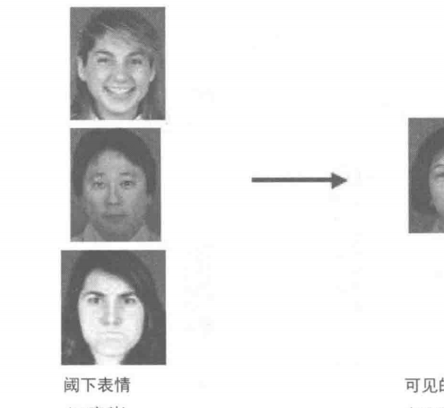
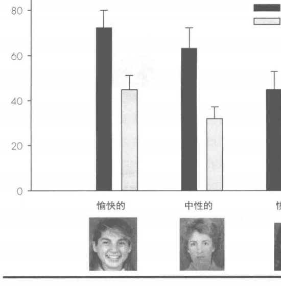
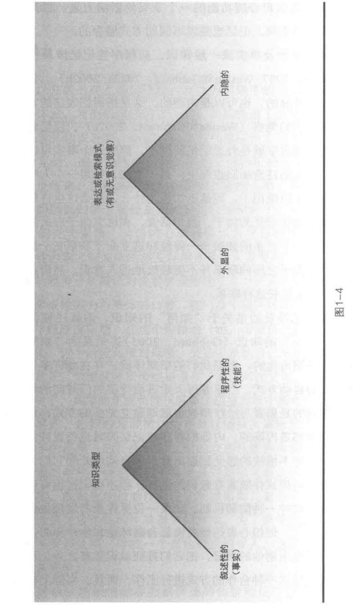

第一章 核心概念
在持续了 4 年零 4 个月的长程心理动力学心理治疗的最后一个月，A 女士——一位 38 岁的职业女性，向她的治疗师讲述了她在治疗中的经验。
A 女士：我认为我现在理解了为什么这个治疗需要这么长时间。
治疗师：你怎么理解？
A 女士：嗯，回过头去看一下，我意识到我在这里花了那么多的时间逃避自己，逃避你。告诉你这些虽然有些令人尴尬，但我觉得第一年的大部分时间我都在努力给你留下一个好印象——我是个非常健康和可爱的人。有时我意识到我在回避一个宝贵的机会，让一个人在一种非评判性的接纳的关系中真正地了解我，毫无保留地。我不知道现在在什么地方还能找到这种机会。我最后放下了我的防御，开始告诉你所有的事情。
治疗师：我记得的。
A 女士：讽刺的是，我认为的"所有的事情"其实只是个开始。
当我认为我已经触及了我心理的地板时，你帮助我看到在地板下面还有我从来不知道的地下室、洞穴和黑暗的壁。（注释：此处扫描件疑有脱字，或为"壁龛"）心理治疗把我带到了我不想去的地方。
治疗师：真的吗？
A 女士：是的，那时我不想去那里，但是现在我很高兴我去了。我以一种很深刻的方式了解了自己，我过去认为这是不可能的，而且，因为你看到了我看不到的有关我的事情，所以我了解我自己才是可能的。我认为，在我整个一生当中，我第一次感到我是为自己而活着，而不仅仅是给予人们他们想要的东西。
正如这位充满感激的患者所揭示的，一个人常常无法充分地了解长程心理动力学心理治疗的价值，直到他在治疗将近结束时回过头去看整个治疗的过程。进入这种形式的治疗是令人胆怯的，而且它常常和一个人的安全感格格不入。虽然许多人凭直觉知道短程治疗不能给予他们渴望的答案，但也无法让有经验的心理治疗师有足够的时间以一种深刻的他们希望被了解的方式来了解他们。确实，患者的满意度随着治疗持续时间的增加而增加（Consumer Reports，1995）。在一个"快速修理"和遗传简化论的时代，长程动力学心理治疗的价值引人注目。
尽管长程心理动力学治疗持续地受欢迎，但它被普遍地误解了。常见的误解包括：
1. 心理动力学治疗师大都是沉默的。
2. 突破总是发生在被压抑的记忆突然被发现、情绪得到强烈的疏泄时。
3. 这种治疗关注的焦点是患者的性欲。
4. 所有对治疗师的反应都是根据过去的关系对当前情境的歪曲。
5. 这种治疗既是没完没了的，也是无效的（就像伍迪·艾伦电影里主人公接受的治疗）。
6. 心理动力学治疗师是一个面无表情、冷冰冰的空白屏幕，他不会暴露任何他自己对患者的反应。
7. 心理动力学治疗师从不发表意见或对患者所说的内容表达自己的看法。
虽然心理动力学来自精神分析，但即使是弗洛伊德（Freud）的治疗方式也和各种对心理动力学的误解有着显著的不同。当今的心理动力学治疗师更积极地与患者相互合作，更多地在情绪上与患者的情感状态共鸣，而不是被动的或面无表情的，在需要的时候也愿意谈话，对他们自己如何影响患者对他们的感知保持清晰的觉察。他们也很少会对深深埋藏的过去进行戏剧性的暴露。
如果我们要描述当代长程心理动力学心理治疗的特征，我们也许可以用下面的定义："一种非常仔细地关注治疗师—患者互动、认真地选择时机以解释移情和阻抗的治疗，其基础是深入地理解治疗师对两个人（治疗师—患者）领域的影响。"（Gunderson 和 Gabbard，1999）这种治疗的理论模式包括来自自我心理学的潜意识冲突理论、客体关系理论、自体心理学以及依恋理论。
在一篇比较心理治疗过程的文献综述中，Blagys 和 Hilsenroth（2000）识别出区分心理动力学治疗和认知行为治疗的七个技术。这些特征总结在表 1-1 中。
表 1-1 心理动力学心理治疗技术的特征
- 聚焦于情感和情绪的表达
- 对试图回避某些经验的探索
- 识别反复出现的主题和模式
- 对过去的经验的讨论
- 聚焦人际关系
- 聚焦治疗关系
- 对愿望、梦和幻想的探索
根据患者的需要，这些特征会以不同的程度被运用。不过心理动力学心理治疗实践的另一个标志是它聚焦于个体独特的、特质的和不同的方面。心理动力学治疗师认识到患者过着与他人不同的生活，其采取的技术和策略应该适应患者的个体特征。虽然长程心理动力学治疗曾经意味着一种没有特定结束时间的、绝对开放的过程，但是今天有些治疗目标是 40 或 52 次，但使用的许多原则仍和长程心理动力学治疗是一样的（Barber 等，1997；Svartberg 等，2004；Winston 等，1994）。在一个管理型医疗的时代，8～12 次的治疗也许是被允许的最多治疗次数，40～52 次的限时治疗肯定是属于长程治疗的范畴了。这样，我们就有了两种分类：（1）限时的，治疗次数在开始时就已经确定了；（2）开放的，治疗根据情况自然结束。为了下定义，我们就必须做一个武断的分界点。在充分地意识到这种分界点的武断性的情况下，在本书中我们将"长程"定义为治疗持续时间超过 24 次或 6 个月。
一系列的基本理论和原则组成了心理动力学的基础，这些理论和原则在我的另一本书《动力取向精神医学——临床应用与实践（第 5 版）》（Gabbard，2014）中，做了详尽的回顾。在此仅做一个简要的回顾，介绍一些必要的概念和理论应用（表 1-2）。
表 1-2 心理动力学心理治疗的基本原则
- 绝大部分的精神生活都是潜意识的。
- 童年经历与遗传因素一起塑造了成年人。
- 患者对治疗师的移情是理解患者的主要途径。
- 治疗师的反移情对理解患者在他人身上引起什么样的反应提供了有价值的信息。
- 患者对治疗过程的阻抗是治疗的主要关注点。
- 症状和行为有许多功能，是由复杂的而且常常是潜意识的力量决定的。
- 心理动力学治疗师帮助患者获得一种真实感和独特感。
心理动力学心理治疗的核心概念
潜意识的心理功能
虽然不是弗洛伊德发现了潜意识，但他阐述了一种给予潜意识核心重要性的理论和技术。对潜意识精神生活的重视依然是精神分析或心理动力学治疗的核心。然而，我们看待潜意识精神功能的方式与弗洛伊德早期著作的时代相比，已经有了相当大的改变。弗洛伊德最初关注的是心理的地形模型，这种模型将意识、前意识和潜意识领域划分为一个分层的等级。虽然潜意识里的材料不能轻易地带入到意识中，但前意识内容可以简单地通过转移注意力而找回来。弗洛伊德大部分著作关注的是潜意识，一个保留了动力学的被压抑的内容。这些内容被排除在意识之外，因为它们会引起冲突。弗洛伊德最初的精神分析方法是通过克服压抑的障碍，努力把这些潜意识内容带到意识层面上来，这样它们就可以被检查和理解，但很快弗洛伊德就懂得通过疏泄对记忆的去压抑并不能带来持续的改变。
弗洛伊德的模式逐渐变得更加复杂，他最终在 1923 年提出了包括自我、本我和超我三方面的结构理论（Freud，1923/1961）。在结构模式中，自我被认为是与攻击和性驱力截然不同的。自我的意识部分包括心理的执行功能，比如做决定、整合感知信息以及心理计算。自我的潜意识部分主要涉及防御机制，目的是对抗驻留在本我的强有力的本能驱力。性和攻击被认为是基本的驱力，它们需要来自自我的大量的防御努力，来防止它们对人们的功能造成破坏。
如图 1-1 所示，本我完全是潜意识的，为自我的潜意识部分和第三个被称为超我的力量所控制。超我主要是潜意识的，代表着来自个体环境中父母或其他人的道德价值的内化。有时超我又被再分为自我理想和道德良知。自我理想用来禁止（如基于一个人的价值系统来规定一个人不应该做什么），而道德良知或真正的超我用来要求（如规定一个人应该做什么）。
这种结构理论把它自身引向了一种潜意识冲突理论。自我、本我和超我这三种力量围绕着性和攻击的表达和释放处在持续的冲突中。信号焦虑就是由这些力量之间的冲突造成的（Freud，1926/1959）。这种类型的焦虑会向自我发出警报，需要防御机制来阻止应该被禁止的攻击和性的表达。症状的形成就与这种方式的神经症性冲突有关。换句话说，冲突造成了信号焦虑，这接着导致了一种防御，进而导致了在本我和自我或本我和超我之间的妥协。因此，症状就可以理解为一种既防御了一种愿望同时又以一种伪装的形式满足了这种愿望的妥协形成。
虽然潜意识冲突依然是心理动力学治疗中要处理的普遍现象，但我们对潜意识精神活动的理解，从弗洛伊德提出他的理论以来的这些年里，经历了一种变化。他的基本前提，即大部分的精神生活都是潜意识，已经广泛地被实验心理学领域的研究所证实（Westen，1999）。但是，把"潜意识"比喻为一种内容驻留的空间的看法在当代的话语里已经不流行了。今天，一个具备神经科学知识的心理动力学治疗师更愿意说潜意识的精神功能或潜意识的表征，而不是"潜意识"。
有关潜意识心理功能的研究有一个令人深省的发现，即使那些认为自己没有任何形式种族主义的人，当他们作为一项精心设计的研究的被试时，都可能潜意识地暴露他们的种族主义倾向。Word 等（1974）为普林斯顿大学的学生设立了一个模拟的求职面谈情景。相比于他们面试白人时的行为，当被面试者是非洲美国人时，那些扮演招聘面试官的普林斯顿大学白人学生被记录下来坐得离被面试者更远，会出现更多的言语错误，而且结束面试更早。当执行面试的学生被告知让白人被面试者接受他们在黑人被面试者面前表现出的同样的非言语行为时，白人被面试者表现出了之前没有出现的操作问题。因此研究者得出结论，非洲美国人在申请工作的面试中会受到歧视对待，但并不存在面试官有意识的故意的歧视。
由 Greenwald 等（1998）研制的种族-内隐联想测验被用于一项实验，被试对闪现给他们的黑人和白人面孔的照片进行积极和消极的描述性形容词联想。研究人员发现，即使被试想尽可能快地有意识地把积极描述与黑人面孔联系起来，就像他们对白人面孔那样，他们也做不到。参加这项研究的 80% 的被试都有倾向白人的联想。对待种族的合乎规范的态度是在两个水平上运作的：意识的和潜意识的，而且潜意识的观点可以和意识的观点完全地不相容。在意识上相信种族平等的人表现出了潜意识的种族偏见。被试不得不得出结论，当然非常地不情愿，他们无法去做某件简单的事情，尽管他们在意识上愿意去做。因此，潜意识生活的力量被令人信服地证明了。
没有觉察到的感受和情感对人们的行为会产生影响这种观念一直存在争议，而且很难被证实。Berridge 和 Winkielman（2003）设计了一项非常有独创性的实验来研究这种可能性。研究人员让这项研究的参与者在 8 个愉快、愤怒或中性面部表情中阈下暴露 16 毫秒。情绪表情会被紧跟着的第二张面孔图像所掩盖，第二张面孔图形呈现的时间要足够长，能够在意识上被感知到（参见图 1-2）。

在暴露于愤怒、愉快或中性面孔之后，参与者立刻根据一个 10 分量表，从非常不愉快到非常愉快，评估他们自己的主观情绪。然后，研究人员给他们一壶水果味道的饮料，让他们想倒多少倒多少，喝掉它，并对它进行评估。在口渴的参加者中，与他们只看到中性的面部表情的情况相比，对愉快的面部表情的阈下暴露会使他们多倒和多喝 50% 的果味饮料。与那些提供阈下中性表情的人相比，看到阈下愤怒表情的人饮料倒得少，喝得也少（参见图 1-3）。即使在倒饮料和喝饮料之前被试对他们的主观情绪状态没有觉察到任何的变化，这些行为也会发生。研究团队断定这个发现模式证明潜意识情感反应会影响行为。

2008 年美国总统选举带来了另一个潜意识心理功能的证明。Galdi 等（2008）开发了一项以计算机为基础的、快速的分类任务，用以评估自动的心理联想。他们把这些联想与自陈报告方法进行比较，来评估有意识地赞成的信念和偏好。政治上尚未做决定的参与者的自动联想可以预测在 1 周的时间里有意识地报告过的信念和重要的选择的变化。研究者发现那些在意识上还未做决定的人常常在潜意识水平上已经打定了主意。研究者还注意到，即使在一些重要的政治选择事情上，人们似乎也并不了解他们自己的不了解。他们随便地给出他们的偏好的理由，尽管这些理由很明显都是虚构的。研究者注意到，当投票后民调给出有关"人们为什么以他们投票的方式进行投票的原因"的信息时，它们常常是有误导性的。即使人们并不知道他们为什么以他们投票的方式投票了，但当被问到时，他们很少会回答"我不知道"。研究者得出结论：绝大多数心理过程都是无法被直接观察的。在当代精神分析的理解中，记忆研究已经成为如何看待潜意识心理功能的一个重要的影响力量。根据所涉及的知识的类型的不同，记忆也是以不同的方式储存的。

叙述性记忆涉及事实或一般知识，而程序性记忆涉及技能（图 1-4）（Squire，1987；Westen 和 Gabbard，2002a，2002b）。任何一种记忆既可以是外显的，也可以是内隐的，这是指回忆表达的方式，即是否存在有意识的觉察（Westen 和 Gabbard，2002a）。回忆起一个人五年级的老师的名字就是外显记忆的例子，因为这个事实可以简单地通过转移一个人的注意而回想起来。另一方面，如果一个人听到收音机里的一首曲子时流泪了，而他不知道为什么，那么这也许就是一个很好的内隐叙述性记忆的例子。换句话说，和这支曲子有关的一个事件——也许是一个关系的破裂——曾经和这支曲子联系在一起，但这个事件和这支曲子之间的联系并不能轻松地进入意识。然而，治疗性的探索也许能回忆起这种联系。
程序性记忆涉及的是关于"如何"的知识，而叙述性记忆涉及的是关于"……"的知识（Gabbard，2005）。关系的"如何"是在我们生活的早期内化的，根据我们的早期体验，存在着许多个人和他人建立关系的自动方式。当患者每天走进治疗室的门并向治疗师打招呼时，它包含的是患者与治疗师很自然地建立关系的方式，所以说程序性记忆通常都是内隐的。内隐的程序性记忆同时也负责许多防御机制，它们通过把不愉快的感受驱逐出意识来自动地处理它们。尽管如此，如果表达的模式伴随着有意识的觉察，程序性记忆也可以是外显的。压制就是这样一种防御机制。如果一位男性患者发现他自己对他的治疗师很生气，但担心表达他的愤怒会破坏他和治疗师的关系，他也许会有意识地压制他的愤怒，把它们推到意识觉察之外。程序性记忆和叙述性记忆以一种合作的方式进行工作，而且，实际上有时很难把这两种类型的记忆区分开。
发展的观点
需要以发展的观点看问题是心理动力学思考的核心假设。一个个体的童年体验，与他的遗传特征一起，共同塑造了成年人。遗传和认知神经科学的知识表明，由遗传决定的气质在很大程度上影响了儿童和父母的互动。遗传的性格特征会引起父母特定的反应（Reiss 等，1995）。反过来，父母的行为又会影响儿童的人格。从这一点来看，把孩子的问题都归罪于父母是把问题过分简单化了。从发展的观点来看，儿童的先天素质、父母的心理特征以及父母和孩子之间的"搭配"，这些因素之间复杂的相互作用才是至关重要的。
早期的精神分析理论对发展的理解建立在力比多区域的基础上。儿童的力比多或性驱力与身体的口腔、肛门及生殖区域联系在一起。接着儿童进入了俄狄浦斯期，在这个阶段他（她）希望自己是异性父母唯一的爱的客体。这个阶段儿童对母亲、父亲以及他自己复杂的三角关系有了突然的意识。负俄狄浦斯情结是指孩子渴望同性父母，而异性父母被看作竞争对手。典型的正或负俄狄浦斯主题在发展中都可以观察到。
对于男孩，超我的发展被认为是俄狄浦斯发展阶段的结果。因为与占有母亲的愿望一起产生的对父亲的攻击性使得男孩不得不接受不能占有母亲的事实，他也不得不接受最好是和父亲认同而不要冒遭受报复的事实。阉割焦虑被看作男性俄狄浦斯期儿童最根本的担心，他害怕父亲会通过攻击他的生殖器来报复他。为了避免这种可怕的可能性，男孩与父亲认同，寻找一个像他母亲的女人，这样他就可以避免直接与父亲竞争。
女孩的俄狄浦斯情结在弗洛伊德的传统理论中就不那么有连贯性了。女权主义的发展理论已经取代了传统的、把女孩看成遭受着阴茎嫉妒的劣等男性的观点。更多的当代女性心理发展理论认为女性认同的发展涉及基因、文化、与父母认同以及内在客体关系等因素的复杂的作用，而不是简单地假设为解剖差异（Benjamin，1990；Chodorow，1996）。
自体与他人的早期经验，以及与之相关的情感状态，被内化并产生了这些人际关系相互作用的表征，这个概念是发展理论的另一个重要特征（Fonagy 和 Target，2003）。这些内化的客体关系会在一个人的一生中不断地重复，而且患者在心理治疗中描述的有问题的人际互动通常都来自他小时候遇到的早期的人际关系困难。父亲或母亲的内在表征也许和建立这个表征所依据的外在形象并不完全一致。孩子对父母的幻想也许会夸大与父母互动中的一些固有的倾向，因此铭刻在特定的神经网络中的自体和客体表征会不同程度地脱离外在人物的特征。
如我们所知，客体关系理论大部分是在英国发展起来的，梅兰妮·克莱因（Melanie Klein）试图将驱力理论与内在客体关系整合起来。后来的学者，如罗纳德·费尔贝恩（W. R. D. Fairbairn）和唐纳德·温尼科特（D. W. Winnicott），发展了所谓的英国独立学派，该学派认为儿童的原始动机是寻求关系，而不是驱力满足（经典的弗洛伊德学派的观点）（Gabbard，2005）。
自我心理学强调的是内心冲突，海因兹·科胡特（Heinz Kohut，1971，1977，1984）在发展的缺陷模式的基础上发展了自体心理学。科胡特认为许多个体缺乏来自母亲的与发展相适应的共情，这导致其内心存在着一种缺陷。这种缺失了什么东西的感觉导致他们向外寻求来自他人的反应，来弥补他们自身缺乏的功能。科胡特把它们称为自体客体功能。根据他的观点，发展依赖于来自照料者的自体客体反应这一过程，使得自体逐步变得更具有凝聚力。
自体心理学的观点与 Daniel Stern 的一些婴儿观察研究是一致的（1985，1989）。他指出，来自母亲或照料者的认可和肯定反应对发展婴儿的自体感至关重要。科胡特强调，没有这些反应，自体容易变得支离破碎，导致了临床上极端的自恋的易感性。
虽然依恋理论在某种程度上与客体关系理论有关，但它还是独立发展的。约翰·鲍比（Bowlby，1988）反复地强调儿童真实体验的重要性，而不是幻想，这与克莱因学派的观点形成了鲜明的对比。鲍比相信儿童存在的目的是维持与母亲或照料者亲近的整个行为系统（Fonagy，2001）。在依恋理论中，儿童的动机不仅仅是寻求一个客体，而是为了获得由于和母亲或照料者的躯体亲近而带来的一种具有安抚性的心理状态。通过研究婴儿对所谓的陌生情景的反应，研究者已经对依恋的类型进行了分类（Ainsworth 等，1978）。当暴露在和母亲短暂分离的情况下时，儿童可能会做出四种通常反应的其中一种，通过这些反应我们可以对依恋进行分类：（1）安全的依恋；（2）焦虑-回避的依恋；（3）焦虑-矛盾或拒绝的依恋；（4）紊乱／混乱的依恋。这些依恋类型在某种程度上和类似的成人依恋类型相关：（1）安全／自主的成年人；（2）不安全／拒绝的成年人，他们理想化、诋毁、否认以及贬低过去以及当前的依恋；（3）忧虑重重的成年人，他们对亲密关系感到很困惑或不知所措；（4）未解决的或紊乱的个体，他们常常是创伤或被忽略的牺牲者。伴随着创伤或被忽略的不安全依恋可能会阻碍心智化能力的发展，所谓心智化能力就是理解另外一个人或自己的内心作为动机的来源的能力。
当代的精神分析观点是以发展为特征的，我们对一些主要的发展理论的简要回顾，无法全面地反映有关发展的争议和复杂性。每一种模式可能对特定的临床情境有价值，心理动力学治疗师需要采用不同的理论模式来适应患者的需要（表 1-3）。
表 1-3 发展模式
| 理论模式 | 动机 | 发展的基本单位 | 精神病理 |
|---|---|---|---|
| 自我心理学 | 驱力满足 | 自我／本我／超我 | 冲突／妥协形成 |
| 客体关系 | 寻找客体 | 通过情感相联系的自体和他人的表征 | 基于内在客体关系的外化而导致的反复发生的适应不良的关系模式 |
| 自体心理学 | 自体凝聚／自尊 | 自体—自体客体 | 自体的破碎／自恋性的脆弱性 |
| 依恋理论 | 躯体的安全感 | 内部工作模式 | 不安全依恋／心智化失败 |
不管发展的心理模式如何，心理动力学观点和以下的观点是一致的，即把成年患者看作重要的早期经验的产物，这些经验会在现在与他人（包括治疗师）的关系中不断地重复。
移情
当童年关系模式在当前与治疗师的关系中得到重复时，我们可以观察到移情这个核心的心理动力学概念。过去的一个人物的特征被赋予到医生的身上，与这个人物有关的情感也以相同的方式在和医生的关系中被体验到。弗洛伊德最初的想法是，移情是一种"模式化模板"（Freud，1912/1958）。弗洛伊德假设来自童年的力比多或性的愿望被直接转移到分析师这个人的身上。克莱因学派和客体关系理论家通过投射认同的概念扩展了移情的概念（Feldman，1997；Gabbard，1995；Joseph，1989；Ogden，1979；Spillius，1992）。在投射认同的过程中，患者潜意识地把自体或客体表征投射入治疗师，然后，通过施加人际压力，"迫使"治疗师接受与被投射的表征相似的特征。因此，患者会表现为一种激惹的方式，直到治疗师变得被激惹起来，并潜意识地表现得和患者过去的一个愤怒的客体一致起来。
自体心理学通过强调自体客体移情把治疗师看成患者自体完成的必要部分扩展了对移情的理解。因为自体被看作处在一种缺陷状态下，移情客体就必须完成由于缺乏父母足够的共情所导致的、患者所不具有的功能。这样，患者也许会寻求通过把治疗师看成赞成或肯定自己来完成自体。Stolorow（1995）通过强调移情是双维度的而扩大了自体心理学对移情的理解。正如弗洛伊德所描述的，移情存在着重复的一面，但同时也存在着患者寻找具有治疗作用的新的客体经验的修复的一面。
近来，当代精神分析的后现代观点，如关系的、构成主义的以及人际关系理论，也影响了看待移情的方式。移情的构成主义模式（Hoffman，1998）强调，治疗师实际的行为，总是在影响患者对治疗师的体验。根据这个观点，患者与治疗师的互动总是存在着以治疗师的实际特征为基础的现实部分，而治疗师的实际特征又与来自过去的旧的客体关系相互作用。实际上，所有当代的关于移情的观点都同意患者对治疗师的感知总是治疗师的现实特征和来自过去人物的部分的混合——实际上，是旧的和新的关系的结合。
反移情
心理动力学思考的一个标志就是，患者和治疗师各自具有自己独立的主体性，它们在治疗过程中以一种有意义的方式相互作用。心理动力学治疗师不是一个通过显微镜观察标本的科学家，而是一个有着他自己的冲突和情绪挣扎的与患者同类的人。他潜意识地把患者体验为他过去的某个人，同时，患者也把他体验为自己过去的某个人。因此，治疗师的反移情与患者的移情类似。随着时间的过去，这种狭隘的或弗洛伊德学派对于反移情的观点已经扩展为更为广泛的观点，即把治疗师所有的对患者的情绪反应都看作反移情。这种扩大的定义也正常化了这个概念，这样反移情就不仅仅被看作帮助患者的障碍，它同时还是有关患者的重要信息的来源。反移情现在被看作一种主要的治疗和诊断工具，它可以告诉治疗师大量的有关患者内心世界的信息。
当前的绝大多数的理论观点都把反移情看成治疗师和患者在治疗师身上共同引起的必需的反应。换句话说，治疗师对患者的部分的反应是建立在治疗师过去的关系基础上的，他把它们带入了当前的情景中，就如同移情一样。但是，除此之外，治疗师情感的其他方面则受到患者行为的诱导。通过投射认同，患者重新建立了一种旧的客体关系，在这个关系中治疗师扮演了患者过去生活中一个主要的角色（Gabbard，1995）。比如，如果患者让治疗师很生气，那么治疗师的生气可能来自治疗师内在世界中过去的关系，但同时也可能来自患者现实的行为，患者的行为在治疗师身上引起了和在患者过去的客体身上类似的反应。
阻抗
心理动力学心理治疗中一个基本的原则就是患者对改变很矛盾。通过多年运用特定的防御机制让痛苦的情感远离自己，患者的内心已经取得了平衡。进入治疗威胁到了这种平衡，因此患者会潜意识地反抗治疗师所做的导致内省和变化的努力。患者特征性的、用于处理不愉快情感的防御机制，以阻抗的形式被治疗所激活（Greenson，1967）。阻抗和防御机制的差别就是前者可以被治疗师观察到，而后者必须通过推断（Thoma 和 Kachele，1987）。
阻抗可以表现为各种形式，包括沉默、无话可说、忘记付治疗费、谈论一些似乎和治疗无关的问题、拒绝发展需要努力的治疗目标、治疗时迟到、忘记服药、忘记治疗师说过的话，以及取笑治疗师的干预等。
许多阻抗是移情阻抗。患者可能因为一些特定的、关于治疗师如何看待他们的幻想而反抗治疗。患者不愿意告诉治疗师他们感到最为羞耻的秘密，可能是因为他们认为治疗师会因为他们暴露这些秘密而羞辱他们、批评他们。患者阻抗的方式可能是过去关系的再现，这些关系依然影响着患者当前的各种各样的关系。因此，阻抗不仅仅是一种需要从治疗中去除的障碍，它还是一种来自患者过去的、转移到此刻与治疗师的关系中的非常重要的内在客体关系的呈现（Friedman，1991）。治疗师帮助患者理解什么被重现了，以及它是如何影响患者处理治疗中的问题的能力的。
精神决定论
精神决定论是一个非常重要的精神分析概念，是指我们生活中的应对受到我们与他人的动力学关系中潜意识力量的影响。同样地，症状或行为通常有许多功能，要解决许多问题，即使我们无法理解潜意识原因。Sherwood（1969）指出，"弗洛伊德很明显地认为行为的原因既是复杂的（多因素决定的），也是多样的（也就是说还有其他一系列的充分条件）"。换句话说，行为或症状有时是由一些特定的内心因素导致的，它们一起作用造成了最后的结果，而有时它们是由不同的病因造成的。与令人愉快的愿望或安全有关的潜意识幻想常常是决定我们与他人交往、控制痛苦情感以及指引我们生活的方式的动机（Fonagy 和 Target，2003）。
精神科医生都知道遗传的、生物学的、创伤的以及社会因素也会影响行为。一个大脑受伤的患者可能会因为大脑的某些部位的损害而出现遗忘，而不是因为重要的动力学的原因。但不管怎样，心理动力学治疗师相信，遗传或社会原因所导致的症状和行为也是有意义的。这些意义与长期存在的潜意识信念、想法以及情感都有关系，是很有价值的并且能够和患者一起探索的。
患者独特的主观性
心理动力学思考的最后一个原则是我们并不是很了解自己。因为种种冲突、限制、焦虑以及防御，我们倾向于把自己隐藏起来，而心理动力学治疗师的任务就是寻找患者真实的自体。
温尼科特（1960）指出，主动性不断地受到父母阻碍的婴儿，令父母无法感受或肯定婴儿的主动性，会找到一种替代的方式和他们的父母建立联系。这种策略通常都会发展出一种父母承认和欣赏的虚假的自体，而真实的自体则被羞耻所包裹，因此，某种程度的真实丧失了。在心理动力学治疗中，治疗师寻找每一个患者独特的主观真实。治疗师尝试承认和肯定患者真实的自体。这种真实的自体很少会是一个整块的实体，绝大多数患者都有一个多方面的自体，它会根据患者的关系情境不同而改变。这种对患者隐藏的部分的探寻可能会包括撕去一些自我欺骗的面纱，以及坚定地探索最让患者感到羞耻的幻想、恐惧及期望。在动力学治疗过程中被了解、被肯定以及被承认的需要可能和理解的愿望一样都是非常重要的。
研究告诉了我们什么？
精神分析师和心理动力学治疗师自我满足了许多年。患者在他们的门口排起了队，因此研究相比于治疗实践就被看作次要的了。结果就是，严格的对精神分析和心理动力学治疗的结果的研究，与认知行为治疗的大量的研究相比，相对来说太少了。诚然，对长程的心理动力学进行研究存在巨大的困难（Gabbard 等，2002）。与为期 16 周的短程治疗研究的费用相比，研究持续 1—5 年的治疗结果的项目费用将是让人难以想象的，找到一个恰当匹配的对照组也很成问题。精神分析和心理动力学治疗的一个基本原则就是，因为治疗动机对进行有时是非常痛苦的探索是必要的，因此治疗必须是自己选择的。因此随机地分配患者到一种或另一种方法代表了研究者的主要困难。类似地，在一个持续多年的治疗当中，从治疗组或对照组中脱落的患者数也会严重地妨碍有意义的统计分析（Gunderson 和 Gabbard，1999）。
在心理治疗的随机对照研究（Randomized Controlled Trials，简称为 RCTs）中存在着一系列的无法克服的问题。不可避免地排除标准被用来聚焦于某种精神障碍。因此，在这些研究中的患者常常和在现实环境中接受治疗的患者有实质上的不同。比如，共病没有得到足够地反映。RCTs 通常都是以障碍为基础的，而在现实生活的心理治疗中，患者并不倾向于对他们的障碍和他们生活中所固有的问题做出区分。换句话说，症状的改善并不是心理治疗的唯一目标。许多前来治疗的患者希望努力面对有关身为人类意味着什么的一些基本事实——关系中冲突的必然性、对控制外在事件的无能为力、爱与恨不可分割地绑定在一起的事实，以及伴随每个成年生活发展阶段的必要的哀悼任务。
的确，认知行为治疗和心理动力学治疗焦点的不同都围绕着治疗目标是否与特定的障碍的症状治疗相联系。在一项比较认知行为治疗和心理动力学治疗改变的体验的研究中，Nilsson 等（2007）发现，满意的患者以不同的方式谈论治疗结果。那些从认知行为治疗中获得帮助的患者，当他们谈论到改变时，会聚焦于呈现的问题以及为了应对这些问题所习得的方法。另一方面，从心理动力学治疗中获益的患者倾向于谈论一个更广的范围，这可以最好地解释为涉及整个人格。类似地，这些患者对他们的心理治疗师的描述也不一样："认知行为治疗患者描述他自己有着实际的和具体的目标，他的治疗师是个知道如何实现这些目标的专家，而心理动力学治疗的患者认为治疗师是一个为患者提供了安全空间的人，在那里他们可以一起合作探索患者这个人及其生活方式，其目的是发现其他的生存方式、更积极的自我照料以及连贯一致的个人历史。"
随机对照模式对长程心理动力学治疗的适用性依然存在着其他的问题，通常接受 RCTs 检验的治疗都是有时限的，而许多长程动力学治疗师认为让治疗进行足够长的时间以解决特定患者的困难是很重要的。正如在本章开头对话中提到的 A 女士，有人需要在治疗过程中躲藏起来并回避他们的问题一段时间。另一个上面提到的反复遇到的问题是寻找恰当的对照组。最严格的对照组是采用被确认的另外一种治疗（Gabbard 等，2002），但是这样的设计很难去实施，因为那些对这项研究很投入的人可能对其中一种治疗特别感兴趣，而对召集另外一种治疗模式的有经验的治疗师并没有做出什么努力。最后，治疗师不是药片或胶囊，他们有人格，因此，适合精神药理学研究的模式并不会轻易地应用到心理治疗中。心理治疗的成功很大程度上取决于治疗师和患者是否"合得来"。我们每个人都更容易和有些人而不是另外一些人交流，这是人性的基本事实。
尽管心理动力学治疗的随机对照研究模式存在着这些局限性，文献中还是出现了越来越多的严格的疗效研究。在一篇最近的关于心理动力学心理治疗的研究证据的综述中，Shedler 指出，由于一些新近的研究文献的贡献，我们可以说研究证据支持心理动力学心理治疗的疗效。通过将心理动力学心理治疗的研究与其他治疗的研究进行比较，他指出动力学治疗的效应值和那些常常被推崇为"循证的"其他治疗的效应值一样大。而且，他指出接受心理动力学治疗的患者会保持在心理治疗中的收获，而且在治疗结束之后还会继续改善，如果研究中包含随访监测的话。正如接下来研究综述所证明的，心理动力学治疗似乎有一种"缓释"效应，它启动了一个持续进行的内在自我反省的过程。
短程心理动力学心理治疗
有相当数量的对短程心理动力学治疗（Short-term Psychodynamic Psychotherapy，简称为 STPP）的研究为治疗原则是坚实可信的这一点提供了一些可信性。Anderson 和 Lambert（1995）做了一项 26 个研究的元分析，证明短程动力学治疗在随访期中与其他治疗同样有效。三个独立的研究表明，准确地解释核心冲突可以预测在几次或几次以上的治疗中取得良好的治疗效果（Crits-Christoph 等，1988；Joyce 和 Piper，1993；Silberschatz，1986）。
最近 Leichsenring 等（2004）对 1970—2004 年的短程心理动力学心理治疗研究做了一个元分析。他们把短程心理动力学心理治疗定义为少于 40 次治疗。包括在这项元分析的障碍有重症抑郁症、创伤后应激障碍、进食障碍、鸦片和可卡因依赖、C 组人格障碍、边缘型人格障碍、躯体形式疼痛障碍、慢性功能性消化不良和社交恐惧症。在目标问题、一般的精神科问题以及社会功能的变化上，短程心理动力学心理治疗和认知行为治疗之间并没有差异。作者得出结论：短程心理动力学心理治疗对许多精神障碍都是一种有效的治疗。
Abbass 等（2006）在久负盛名的 Cochrane 系统综述数据库发表了另一项短程心理动力学心理治疗的元分析研究。这篇综述评估了与获得很少量或没有治疗的伴有常见精神障碍的成人对照者相比较的短程心理动力学心理治疗的疗效。它包括了治疗持续时间总数少于 40 小时的短程动力学治疗的患有常见精神障碍成人的所有随机对照试验。在包含 1431 名患者的 23 个随机研究中，包括了 11 种精神障碍。这些研究评估了短程心理动力学心理治疗对广泛性及躯体焦虑和抑郁症状的减少以及社会适应的疗效。来自绝大多数各类障碍的结果都显示，与对照组相比，治疗组有非常显著的改善，而且在中期和长期的随访中会继续维持。
在随后发表的文章中，Abbass 及其合作者（2008）进行了一项针对 DSM-IV 人格障碍的高强度、短程动力学心理治疗（Intensive, Short-term Dynamic Psychotherapy，简称为 ISTDP）的随机对照试验。27 名根据 DSM-IV 被诊断为人格障碍的患者被随机地分配到 ISTDP 治疗组和少量接触、推迟治疗对照组。治疗持续的时间和结束由治疗师和患者双方以一种自然的方式共同决定。与对照组相比，接受 ISTDP 治疗的患者在所有主要的结果指标上都获得了显著的改善，而且同时在《简明症状问卷》（the brief symptom inventory）和《人际问题问卷》（the inventory of interpersonal problems）两个问卷上的分数都达到了正常范围。在长期随访中，整个治疗组都保持了他们的收获，而且人格障碍的诊断减少了 83.3%，平均治疗持续时间是 27.7 次治疗。
长程心理动力学心理治疗
聚焦于持久的、长程的心理动力学心理治疗的随机对照试验的数目比较少，但这个数字正在逐渐地增加，这使得在"科学家"的眼里，长程心理动力学治疗的正当性也在逐渐地增加。
Winston 等（1994）进行了一项 25 名 C 组人格障碍的对照研究，这些患者接受了平均为期 40.3 次的动力学治疗。与等候名单上的对照患者相比，样本患者在所有的指标上都获得了显著的改善。在随后一年半的随访中，患者都表现出了持续的疗效。
Svartberg 等（2004）将 50 名符合 C 组人格障碍的患者随机分配至 40 次的动力学心理治疗和认知治疗中。治疗师都对以手册为指导的督导非常有经验。疗效通过症状的痛苦程度、人际关系问题以及核心的人格病理来进行评定。在治疗以及随后 2 年的随访期间内，在所有的指标上，全部样本患者都表现出在统计学上有显著的改善。接受认知治疗的患者治疗后没有报告在症状痛苦上有显著的改善，而进行动力学治疗的患者有显著的改善。治疗后两年，54% 的动力学治疗患者和 42% 的认知治疗患者获得了症状上的缓解。研究者得出结论，有理由认为动力学心理治疗后的改善是持续的。
在波士顿心理治疗研究中（Stanton 等，1984），接受支持性治疗的精神分裂症患者与接受有经验的、精神分析取向的治疗师提供的精神分析性治疗的患者进行了比较。精神分析性治疗的频率为每周 2 次或 2 次以上。虽然某些结果指标在每一组中似乎都有不同的改善，但总的来说，接受精神分析治疗的患者并没有显著的优势（Gunderson 等，1984）。Heinicke 和 Ramsey-Klee（1986）比较了对学习困难的儿童强化的（一周四次）与一周一次的心理动力学治疗。这个随机对照试验中的治疗持续时间超过一年。每周治疗一次的儿童与每周治疗四次的儿童相比，有更快的改善率。但在以后的随访中，每周治疗四次的儿童表现出更明显的改善。
Bateman 和 Fonagy（1999）将 38 名边缘型人格障碍患者随机地分配到精神分析取向的部分住院（partial hospital）治疗，或作为对照组的标准精神科治疗。部分住院组的主要治疗包括每周一次的个别精神分析性心理治疗以及每周三次的团体精神分析性心理治疗。对照组的患者不接受心理治疗。在第 18 个月治疗结束时，接受精神分析取向治疗的患者在抑郁症状、社交及人际功能、住院治疗的需要以及自杀和自我伤害行为方面表现出明显的、更大的进步。这些差别在每 6 个月评估一次的 18 个月治疗后的随访中一直存在（Bateman 和 Fonagy，2001）。而且，治疗组在 18 个月的随访期中继续取得进步。在进入这个研究后的 8 年以及在以心智化为基础的治疗已经结束后的 5 年里，那些接受治疗的患者比通常治疗组的患者继续表现出临床上和统计学上的优越性（Bateman 和 Fonagy，2008）。
一项对长程心理动力学心理治疗的元分析研究发表在 2008 年的《美国医学会杂志》（Journal of the American Medical Association）上。在这项元分析中，1960—2008 年的长程心理动力学心理治疗的研究通过计算机搜索被识别出来。至少有 50 次治疗的研究才会被纳入分析。11 项随机对照研究和 12 项观察研究符合这项标注。作者对总体疗效、目标问题、一般精神症状、人格功能以及社会功能的效应值进行了计算。治疗结束时和随访时评估的效应度是分开来计算的，目的是检查效果的稳定性。当与短程的心理治疗相比较时，长程心理动力学心理治疗显示出更好的疗效以及对目标问题和人格功能的更好的总体疗效。对于各种诊断，尤其是那些涉及长期共病的复杂的精神障碍，长程心理动力学心理治疗也产生了显著的、很大的以及稳定的组内效应度。因此研究者们得出结论，对于那些有着更多共病、更为复杂的临床表现的更难以治疗的患者，长程心理动力学心理治疗也许是最佳选择。
为了进一步理解治疗的时间长度在心理动力学治疗中的作用，芬兰的研究人员（Knekt 等，2008）研究了 326 个门诊患者，其中 84.7% 患有心境障碍，43.6% 患有焦虑障碍。128 名患者被随机分配至长程心理动力学心理治疗，101 名被分配至短程心理动力学心理治疗，96 名被分配至以解决问题为基础的治疗。42 名患者过早地中断了治疗。
为了测量结果，研究人员使用了抑郁、焦虑和总体症状的标准化测量。在第一年里，短程心理动力学心理治疗明显地比长程心理动力学心理治疗有效。但是，在第 3 年的随访时，长程心理动力学心理治疗比短程心理动力学心理治疗更有效。在任何随访评估中没有发现短程心理动力学心理治疗和以解决问题为基础的治疗之间有显著差异。
其他的没有运用随机对照设计的研究也提示精神分析和精神分析性心理治疗有积极的效果（Monsen 等，1995a，1995b；Sandell 等，2000；Stevenson 和 Meares，1992；Target 和 Fonagy，1994a，1994b）。在心理动力学研究中有一个反复出现的、令人鼓舞的发现，就是随访评估表明患者有持续的改善，这意味着患者已经学习掌握了一种特定的思考他们经验的方式，这种方式在治疗结束后他们还可以继续应用。
总结
长程心理动力学心理治疗可以定义为聚焦于对移情和阻抗进行慎重的、时机选择性的解释，以及治疗师如何对与患者的互动产生影响保持敏锐的把握的一种治疗。本书中，"长程"定义为时间超过 24 次或 6 个月的治疗。一系列基本的理论模式对精神动力学治疗也是非常重要的。这些理论模式包括自我心理学、客体关系理论、自体心理学和依恋理论。除了这些理论模式，心理动力学治疗师还受到一些重要概念的指导：（1）许多精神生活是潜意识的；（2）童年经验与遗传因素共同塑造了成年人；（3）患者对治疗师的移情是理解的主要途径；（4）治疗师的反移情对理解患者在他人身上引起什么反应非常有价值；（5）患者对治疗过程的阻抗是治疗的重点；（6）症状和行为有多种功能，而且受复杂的、常常是潜意识力量的决定；（7）心理动力学治疗师帮助患者获得真实感和独特感。长程心理动力学心理治疗的研究基础发展得比较慢，但现有的发现还是令人鼓舞的。
（徐勇 译）
参考文献
Abbass A, Hancock JT, Henderson J, et al: Short-term psychodynamic psychotherapies for common mental disorders. Cochrane Database Syst Rev 2006 Oct 18. (4)CD04687
Abbass A, Sheldon A, Gyra J, et al: Intensive short-term dynamic psychotherapy for DSM-IV personality disorders: a randomized controlled trial. J Nerv Ment Dis 196:211-216, 2008
Ainsworth MS, Blehar MC, Waters E, et al: Patterns of Attachment: A Psychological Study of the Strange Situation. Hillsdale, NJ, Erlbaum, 1978
Anderson EM, Lambert MJ: Short-term dynamically oriented psychotherapy: a review and meta-analysis. Clin Psychol Rev 15:503-514, 1995
Barber J, Morse JQ, Krakauer ID, et al: Change in obsessive-compulsive and avoidant personality disorders following time-limited expressive-supportive therapy. Psychotherapy 34:133-143, 1997
Bateman A, Fonagy P: The effectiveness of partial hospitalization in the treatment of borderline personality disorder: a randomized controlled trial. Am J Psychiatry 156:1563-1569, 1999
Bateman A, Fonagy P: Treatment of borderline personality disorder with psychoanalytically oriented partial hospitalization: an 18-month follow-up. Am J Psychiatry 158:36-42, 2001
Bateman A, Fonagy P: 8-year follow-up of patients treated for borderline personality disorder: mentalization-based treatment versus treatment as usual. Am J Psychiatry 165:631-638, 2008
Benjamin J: An outline of intersubjectivity: the development of recognition. Psychoanalytic Psychology 7(suppl):33-46, 1990
Berridge KC, Winkielman P: What is an unconscious emotion? (The case for unconscious "liking"). Cogn Emot 17:181-211, 2003
Blagys MD, Hilsenroth MJ: Distinctive features of short-term psychodynamic interpersonal psychotherapy: a review of the comparative psychotherapy process literature. Clin Psychol 7:167-188, 2000
Bowlby J: A Secure Base: Clinical Applications of Attachment Theory. London, Routledge, 1988
Chodorow NJ: Theoretical gender and clinical gender: epistemological reflections on the psychology of women. J Am Psychoanal Assoc 44(suppl):215-238, 1996
Crits-Christoph P, Cooper A, Luborsky L: The accuracy of therapists' interpretations and the outcome of dynamic psychotherapy. J Consult Clin Psychol 56:490-495, 1988
Feldman M: Projective identification: the analyst's involvement. Int J Psychoanal 78:227-242, 1997
Fonagy P: Attachment Theory and Psychoanalysis. New York, Other Press, 2001
Fonagy P, Target M: Psychoanalytic Theories: Perspectives From Developmental Psychopathology. London, Whurr, 2003
Freud S: The dynamics of transference (1912), in The Standard Edition of the Complete Psychological Works of Sigmund Freud, Vol 12. Translated and edited by Strachey J. London, Hogarth Press, 1958, pp 97-108
Freud S: The ego and the id (1923), in The Standard Edition of the Complete Psychological Works of Sigmund Freud, Vol 19. Translated and edited by Strachey J. London, Hogarth Press, 1961, pp 1-66
Freud S: Inhibitions, symptoms and anxiety (1926), in The Standard Edition of the Complete Psychological Works of Sigmund Freud, Vol 20. Translated and edited by Strachey J. London, Hogarth Press, 1959, pp 75-175
Friedman L: A reading of Freud's papers on technique. Psychoanal Q 60:564-595, 1991
Gabbard GO: Countertransference: the emerging common ground. Int J Psychoanal 76:475-485, 1995
Gabbard GO: Psychodynamic Psychiatry in Clinical Practice, 4th Edition. Washington, DC, American Psychiatric Publishing, 2005
Gabbard GO: Bound in a nutshell. Int J Psychoanal 88:559-574, 2007
Gabbard GO, Gunderson JG, Fonagy P: The place of psychoanalytic treatments within psychiatry. Arch Gen Psychiatry 59:505-510, 2002
Galdi S, Arcuri L, Gawronski B: Automatic mental associations predict future choices of undecided decision-makers. Science 321:1100-1102, 2008
Greenson RR: The Technique and Practice of Psychoanalysis. New York, International Universities Press, 1967
Greenwald AG, McGhee DE, Schwarz JLK: Measuring individual differences in implicit cognition: the Implicit Association Test. J Pers Soc Psychol 74:1464-1480, 1998
Gunderson JG, Gabbard GO: Making the case for psychoanalytic therapies in the current psychiatric environment. J Am Psychoanal Assoc 47:679-704, 1999
Gunderson JG, Frank AF, Katz HM, et al: Effects of psychotherapy in schizophrenia, II: comparative outcome of two forms of treatment. Schizophr Bull 10:564-598, 1984
Heinicke CM, Ramsey-Klee DM: Outcome of child psychotherapy as a function of frequency of session. J Am Acad Child Psychiatry 25:247-253, 1986
Hoffman IZ: Ritual and Spontaneity in the Psychoanalytic Process: A Dialectical-Constructivist View. Hillsdale, NJ, Analytic Press, 1998
Joseph B: Psychic Equilibrium and Psychic Change: Selected Papers of Betty Joseph. Edited by Feldman M, Spillius EB. London, Routledge, 1989
Joyce AS, Piper WE: The immediate impact of transference in short-term individual psychotherapy. Am J Psychother 47:508-526, 1993
Knekt P, Lindfors O, Härkänen T, et al: Randomized trial on the effectiveness of long- and short-term psychodynamic psychotherapy and solution-focused therapy on psychiatric symptoms during a 3-year follow-up. Psychol Med 38:689-703, 2008
Kohut H: The Analysis of the Self: A Systematic Approach to the Psychoanalytic Treatment of Narcissistic Personality Disorders. New York, International Universities Press, 1971
Kohut H: The Restoration of the Self. New York, International Universities Press, 1977
Kohut H: How Does Analysis Cure? Edited by Goldberg A with the collaboration of Stepansky PE. Chicago, IL, University of Chicago Press, 1984
Leichsenring F, Rabung S: Effectiveness of long-term psychodynamic psychotherapy: a meta-analysis. JAMA 300:1551-1565, 2008
Leichsenring F, Rabung S, Leibing E: The efficacy of short-term psychodynamic psychotherapy in specific psychiatric disorders: a meta-analysis. Arch Gen Psychiatry 61:1208-1216, 2004
Mental health: does therapy help? Consumer Reports, November, 1995, pp 734-739
Monsen J, Odland T, Faugli A, et al: Personality disorders: changes and stability after intensive psychotherapy focusing on affect consciousness. Psychother Res 5:33-48, 1995a
Monsen J, Odland T, Faugli A, et al: Personality disorders and psychosocial changes after intensive psychotherapy: a prospective follow-up study of an outpatient psychotherapy project, 5 years after end of treatment. Scand J Psychol 36:256-268, 1995b
Nilsson T, Svensson M, Sandell R, et al: Patients' experiences of change in cognitive-behavioral therapy and psychodynamic therapy: a qualitative comparative study. Psychother Res 17:553-566, 2007
Ogden TH: On projective identification. Int J Psychoanal 60:357-373, 1979
Reiss D, Hetherington EM, Plomin R, et al: Genetic questions for environmental studies: differential parenting and psychopathology in adolescence. Arch Gen Psychiatry 52:925-936, 1995
Sandell R, Blomberg J, Lazar A, et al: Varieties of long-term outcome among patients in psychoanalysis and long-term psychotherapy: a review of findings in the Stockholm Outcome of Psychoanalysis and Psychotherapy Project (STOPP). Int J Psychoanal 81:921-942, 2000
Shedler J: The efficacy of psychodynamic psychotherapy. Am Psychol (in press)
Sherwood M: The Logic of Explanation in Psychoanalysis. New York, Academic Press, 1969
Silberschatz G, Fretter PB, Curtis JT: How do interpretations influence the process of psychotherapy? J Consult Clin Psychol 54:646-652, 1986
Spillius EB: Clinical experiences of projective identification, in Clinical Lectures on Klein and Bion. Edited by Anderson R. London, Tavistock/Routledge, 1992, pp 59-73
Squire LR: Memory and Brain. New York, Oxford University Press, 1987
Stanton AH, Gunderson JG, Knapp PH, et al: Effects of psychotherapy in schizophrenia, I: design and implementation of a controlled study. Schizophr Bull 10:520-563, 1984
Stern DN: The Interpersonal World of the Infant: A View From Psychoanalysis and Developmental Psychology. New York, Basic Books, 1985
Stern DN: Developmental prerequisites for the sense of a narrated self, in Psychoanalysis: Toward the Second Century. Edited by Cooper AM, Kernberg OF, Person ES. New Haven, CT, Yale University Press, 1989, pp 168-178
Stevenson J, Meares R: An outcome study of psychotherapy for patients with borderline personality disorder. Am J Psychiatry 149:355-362, 1992
Stolorow RD: An intersubjective view of self psychology. Psychoanalytic Dialogues 5:393-399, 1995
Svartberg M, Stiles TC, Seltzer MH: Randomized, controlled trial of the effectiveness of short-term dynamic psychotherapy and cognitive therapy for Cluster C personality disorders. Am J Psychiatry 161:810-817, 2004
Target M, Fonagy P: The efficacy of psychoanalysis for children with emotional disorders. J Am Acad Child Adolesc Psychiatry 33:361-371, 1994a
Target M, Fonagy P: The efficacy of psychoanalysis for children: prediction of outcome in a developmental context. J Am Acad Child Adolesc Psychiatry 33:1134-1144, 1994b
Thoma H, Kachele H: Psychoanalytic Practice, Vol 1: Principles. Translated by Wilson M, Roseveare D. New York, Springer-Verlag, 1987
Westen D: The scientific status of unconscious processes: is Freud really dead? J Am Psychoanal Assoc 47:1061-1106, 1999
Westen D, Gabbard GO: Developments in cognitive neuroscience, I: conflict, compromise, and connectionism. J Am Psychoanal Assoc 50:53-98, 2002a
Westen D, Gabbard GO: Developments in cognitive neuroscience, II: implications for theories of transference. J Am Psychoanal Assoc 50:99-134, 2002b
Winnicott DW: Ego distortion in terms of true and false self, in The Maturational Processes and the Facilitating Environment. New York, International Universities Press, 1965, pp 140-152
Winston A, Laikin M, Pollack J, et al: Short-term psychotherapy of personality disorders. Am J Psychiatry 151:190-194, 1994
Word CO, Zanna MP, Cooper J: The nonverbal mediation of self-fulfilling prophecies in interracial interaction. J Exp Soc Psychol 10:109-120, 1974